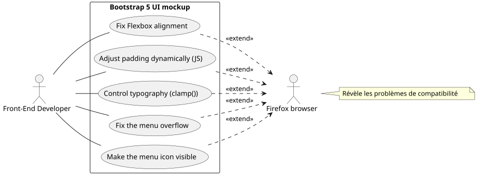
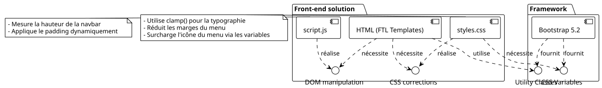
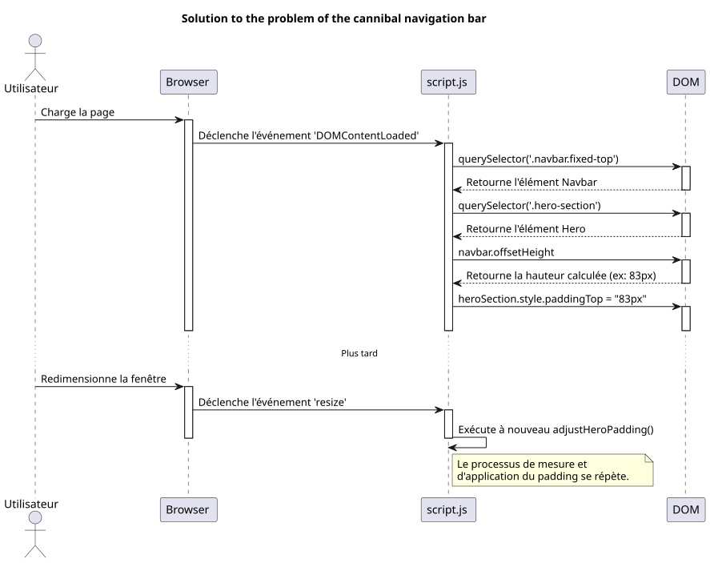
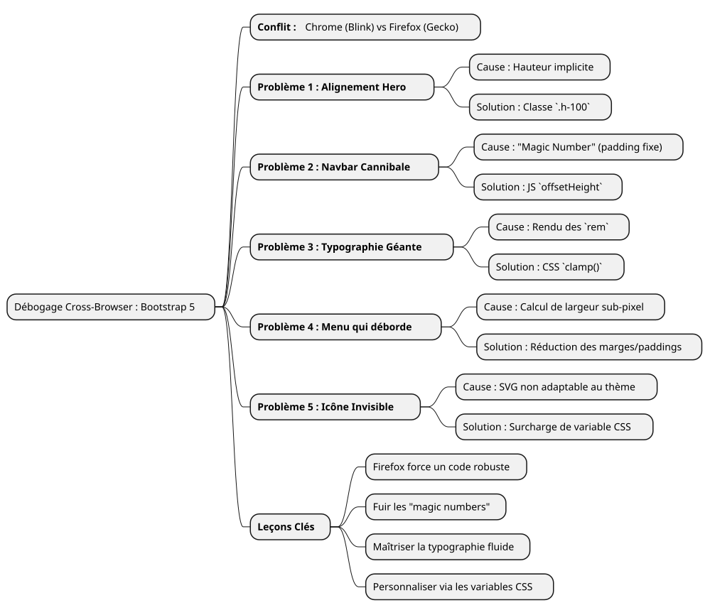

Debugging Story: Taming Firefox's Quirks with Bootstrap 5
Published on 14 July 2025
- The battlefield: one mockup, three browsers, multiple renderings
- Problem 1: The flying card of the "Hero" section
- Problem 2: The cannibal navigation bar
- Problem 3: Anarchic typography
- Problem 4: The overflowing navigation bar
- Problem 5: The invisible hamburger menu
- Conclusion: lessons from a relentless debugging session
|
Reading time: about 7 minutes Level: Intermediate |
In this detailed practical case, we will dissect the most common and sometimes most frustrating browser compatibility issues encountered when creating a UI mockup with Bootstrap 5.2. From Flexbox management to the subtlety of font rendering, discover our debugging journey to transform a shaky design under Firefox into a pixel-perfect experience across all browsers.
The battlefield: one mockup, three browsers, multiple renderings
Every front-end developer knows this feeling. After hours of work, the mockup is finally perfect. Alignments are sharp, typography is elegant, animations are fluid. You breathe a sigh of satisfaction, admire your work on Chrome (or Brave, or Edge), then, to be thorough, you open the project in Firefox. And there, disaster strikes. Elements overflowing, broken alignments, fonts with anarchic sizes… the beautiful harmony has vanished.
This is precisely the scenario we faced while developing a new portfolio interface. The specifications were simple: a modern, responsive home page with a theme selector (light, dark, and high contrast), using vanilla JavaScript and the latest version of Bootstrap 5.2.
This article is not a list of miracle solutions. It is the logbook of our debugging session, a dive into the "why" of rendering differences between the Blink engines (Chromium, Brave) and Gecko (Firefox), and a demonstration that robust and modern solutions are always better than hasty patches.


Problem 1: The flying card of the "Hero" section
The first bug was also the most visible. The home section ("hero") consists of two columns: on the left, the main title; on the right, a presentation card.
-
The symptom:On Chrome and Brave, the two columns were perfectly centered vertically. On Firefox, the right card inexplicably dropped below the left text.
-
The investigation:The HTML code seemed simple and correct, using standard Bootstrap classes.
<section id="home" class="hero-section">
<div class="container">
<!-- Cette ligne est la clé du problème -->
<div class="row align-items-center min-vh-100">
<div class="col-lg-6">
<!-- Contenu de gauche -->
</div>
<div class="col-lg-6">
<!-- Carte de droite -->
</div>
</div>
</div>
</section>Our custom CSS for`.hero-section`defined`display: flex` et align-items: center, and the class`min-vh-100`indeed gave a minimum line height (div.row). So, why did Firefox refuse to center the columns?
-
The root cause:This is a textbook case of how rendering engines interpret implicit heights. The`<section>`had a`min-height`, but no`height`explicit height. To apply`align-items-center`inside`div.row`, Firefox needs to know the reference height of this container. Since its parents (
div.containeret la `<section>`itself) did not have astrictheight, Firefox was lost. The Blink engine, being more permissive, manages to "guess" the intention and center the elements. Gecko, more faithful to the specification, does not. -
The solution:Make the height explicit. We forced the`.container` et le
.row`to occupy 100% of their respective parent’s height using the Bootstrap utility class`h-100.
<section id="home" class="hero-section">
<div class="container h-100">
<div class="row align-items-center min-vh-100 h-100">
<!-- ... -->
</div>
</div>
</section>|
When a`align-items`Flexbox does not work as expected on the vertical axis, always check that the container has a height ( |
Problem 2: The cannibal navigation bar
-
The symptom: Le `padding`was sufficient on Chrome, but not on Firefox, where the title was still partially hidden.
-
The root cause:Using a "magic number" (
80px) is a very bad practice. The height of an element like a navigation bar can vary by a few pixels from one browser to another due to subtle differences in font rendering, spacing, or even user options. Relying on a fixed value is a recipe for a fragile design. -
The solution:A dynamic and infallible solution in JavaScript. We wrote a small script to:
-
Measure the actual height of the navigation bar after the page renders.
-
Apply this measured height as`padding-top`to the "Hero" section.
-
Re-run this function on every window resize to adapt to changes (such as switching to the hamburger menu).
document.addEventListener('DOMContentLoaded', function() {
function adjustHeroPadding() {
const navbar = document.querySelector('.navbar.fixed-top');
const heroSection = document.querySelector('.hero-section');
if (navbar && heroSection) {
const navbarHeight = navbar.offsetHeight;
heroSection.style.paddingTop = navbarHeight + 'px';
}
}
// Ajuster au chargement et au redimensionnement
adjustHeroPadding();
window.addEventListener('resize', adjustHeroPadding);
});
In parallel, we of course removed the`padding-top: 80px;`rule from our`styles.css`file.
Problem 3: Anarchic typography
-
The symptom:On Firefox, the font of the title "Developer Trainer…" was gigantic, almost shocking, while it was harmonious on other browsers.
-
The root cause:The title used a Bootstrap`display-4`class. These classes use responsive font sizes, often based on the`rem`unit and media queries. Once again, Firefox’s rendering algorithm, combined with the "Inter" font, resulted in a much larger size calculation on our 1920x1080 resolution.
-
The solution:Taking back control with the CSS`clamp()
function. This function is a revolution for fluid typography. It allows defining a font size with three values: a minimum size, a "preferred" size (which adapts to the viewport width,`vw), and a maximum size.
.hero-content h1 {
color: var(--text-primary);
line-height: 1.2;
/*
Min: 2rem
Préférée: s'adapte à la vue
Max: 2.5rem (40px)
*/
font-size: clamp(2rem, 1.2rem + 1.5vw, 2.5rem);
}With`clamp()`, we were able to tell the browser: "Let the font grow with the screen, butneverexceed the limit of`2.5rem`". This instantly harmonized the rendering across all browsers, giving us absolute control over the final aesthetic.
Problem 4: The overflowing navigation bar
-
The symptom:On a 1920x1080 screen, the last menu links ("Blog", "Contact") were pushed off the screen to the right, but only on Firefox.
-
The root cause:After several unsuccessful attempts (changing Bootstrap breakpoints from`lg` à
xl`then`xxl), we understood. The cause was not Bootstrap’s logic, but a simple width calculation. On Firefox, the sum of the widths of all links, including their`padding` et `margin`down to the sub-pixel, was slightly greater than 1920 pixels. On Chrome, this same sum was slightly less. We were missing a few pixels. -
The solution:A surgical reduction of spacing. Since targeting Firefox specifically with obsolete CSS "hacks" was out of the question, the only clean solution was to find a common style that works everywhere. We therefore slightly reduced the horizontal margins and padding of each navigation link.
/* La version finale, légèrement plus compacte */
.navbar-nav .nav-link {
font-size: 0.9rem; /* 90% de la taille de base */
color: var(--text-primary) !important;
font-weight: 500;
margin: 0 0.2rem;
padding: 0.5rem 0.5rem !important;
border-radius: 0.375rem;
transition: all 0.3s ease;
}This reduction, almost invisible to the naked eye on a single element, collectively gained us the necessary space for all links to fit within the frame on Firefox, while maintaining a nearly identical appearance on other browsers.
Problem 5: The invisible hamburger menu
-
The symptom:In responsive mode (hamburger menu), the menu icon was invisible on the "dark" and "high-contrast" themes.
-
The root cause:The Bootstrap 5 menu icon is a`background-image`(an SVG encoded in a URL). By default, its stroke color is dark, optimized for a light background. It does not automatically adapt to theme changes.
-
The solution:Using Bootstrap CSS variables to override the icon. We defined a new SVG icon, but this time with a white stroke (
#ffffff), and applied it specifically when the`dark` ou `high-contrast`themes are active.
/* ======================
Fix pour l'icône du menu Burger (Blanc)
====================== */
[data-bs-theme="dark"] .navbar-toggler-icon,
[data-bs-theme="high-contrast"] .navbar-toggler-icon {
--bs-navbar-toggler-icon-bg: url("data:image/svg+xml,%3csvg xmlns='http://www.w3.org/2000/svg' viewBox='0 0 30 30'%3e%3cpath stroke='%23ffffff' stroke-linecap='round' stroke-miterlimit='10' stroke-width='2' d='M4 7h22M4 15h22M4 23h22'/%3e%3c/svg%3e");
}|
The customization of Bootstrap components like this is increasingly done via overriding CSS variables ( |
Conclusion: lessons from a relentless debugging session
This journey, although sometimes frustrating, is rich with lessons. Each solved problem reinforces a fundamental truth of web development:nothing replaces rigorous multi-browser testing.

-
Firefox is an ally:Its greater fidelity to CSS standards forces us to write more robust and less ambiguous code.
-
Avoid "magic numbers":Fixed values (like`padding-top: 80px`) are time bombs. Always prefer dynamic solutions (JavaScript) or relative ones (Flexbox, Grid).
-
Master your typography:Use`clamp()`for total control over responsive font sizes.
-
Think in "components":To customize Bootstrap, override its CSS variables rather than multiplying rules that overwrite the framework.
-
Do not target a specific browser:The solution is almost never to create a "hack" for one specific browser, but to find a common style that works everywhere.
In the end, the mockup is now solid, predictable, and ready to be integrated into a templating system. Each bug fixed was not a failure, but a step toward higher quality code.